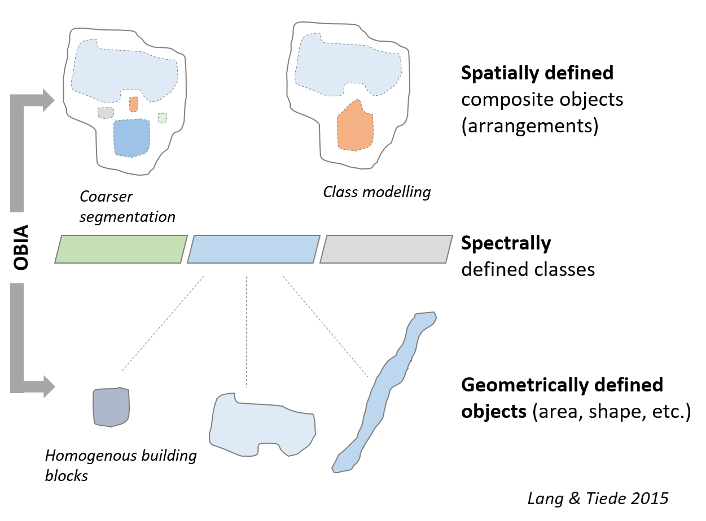
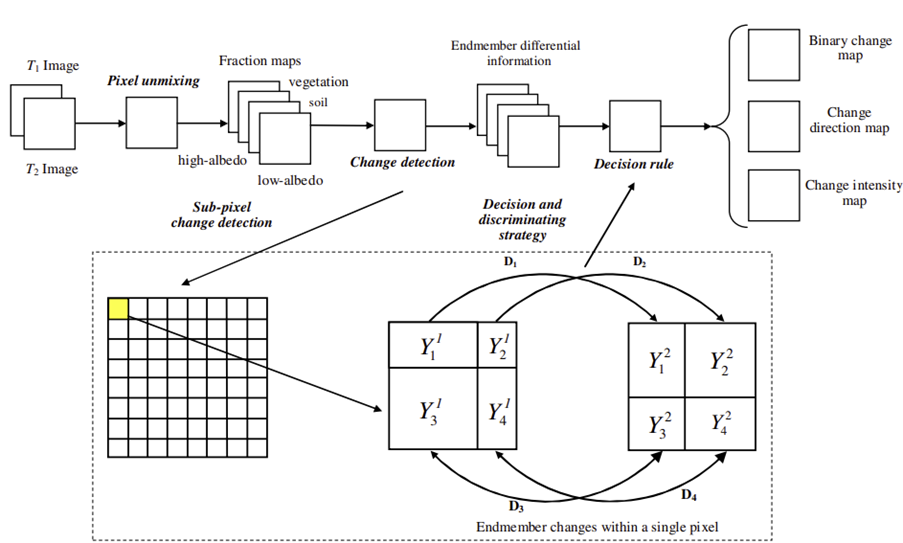
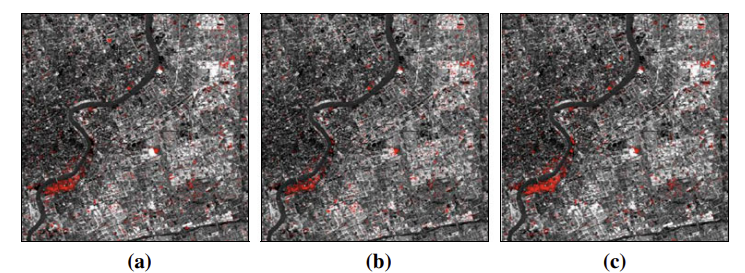
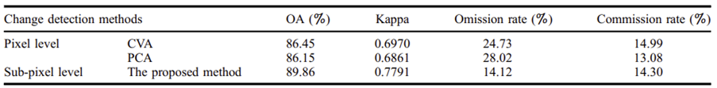

7.1 Summary
This lecture builds upon the foundational concepts covered in last week’s lecture, which focused on CART, Random Forest, and SVM. However, this time, we’ll cover additional principles such as Object-Based analysis, Sub-Pixel analysis, cross validation, and Spatial cross validation but because object-based analysis and sub-pixel analysis are new to me I will talk about them in my diary.
Object-Based Image analysis
Object-based image analysis (OBIA) involves grouping pixels into objects based on spectral similarity or external variables like ownership or soil type. These objects have various attributes such as spectral, shape, and neighborhood characteristics. OBIA allows for the inclusion of landscape knowledge by applying rules to classify objects. For example, identifying a group of trees, grass, and water near dense housing as a city park or distinguishing between forest and individual trees. Compared to traditional spectral image analysis, OBIA offers improved accuracy and detail in classification. (“Object-Based Image Analysis,” n.d.)

Sub-Pixel analysis
Sub-pixel analysis in remote sensing involves examining the spectral composition within individual pixels to detect subtle changes that may not be apparent at the pixel level. By analysing the fractions or proportions of different land cover types within a single pixel, known as endmembers, using advanced algorithms like spectral unmixing, sub-pixel analysis offers a more detailed understanding of landscape dynamics, especially in areas where different land cover types are mixed within a pixel. This approach enhances change detection accuracy and sensitivity. Sub-pixel processing addresses the possibility of a pixel belonging to different classes in an image segmentation context, increasing the resolution of original images.
7.2 Application
For the application part and after giving a brief about Sub-Pixel analysis and Image-based analysis I will be comparing two studies where each one of them used one of the previous method these two studies are: Sub-pixel change detection for urban land-cover analysis via multi-temporal remote sensing images (DU et al. 2014) and Object-based land cover change detection for cross-sensor images (Qin et al. 2013)
Sub-pixel change detection for urban land-cover analysis via multi-temporal remote sensing images:
7.2.0.1 Method:
The proposed method employs an unmixing algorithm to ascertain the proportions of endmembers within a pixel, based on the V-I-S model. Unlike traditional methods yielding binary change results, sub-pixel analysis delves into the variability within pixels, considering all endmembers. Decision-level fusion techniques are used to integrate differential information and determine changes, including class transitions, direction, and intensity. The method involves four key steps: spectral unmixing, differential information generation, change determination based on defined rules, and analysis of change intensity.
7.2.0.2 Steps:
- Spectral Unmixing:
Initially, the BPNN unmixing algorithm is employed to produce the abundance of each endmember within a single pixel in images captured at two different dates.
- Differential Information Generation:
The discrepancy in abundance for all endmembers within a pixel between two dated images is computed, comprising K fractions represented as Dk.
- Change Determination:
Determining change information at the sub-pixel level involves analysing the change indicator to identify changed pixels. This process entails thresholding the change magnitude image of all pixels to create a change map.
- Change Intensity Analysis:
Change intensity, a measure of change probability, aids in detecting potential changes. After identifying changed pixels, intensity is categorized into different levels. Higher intensity values identify significant changes, indicating a greater likelihood of real changes within urban areas.

7.2.0.3 Experiment:
The study conducted experiments primarily focusing on multi-temporal China-Brazil earth resources satellite images of Shanghai city. These images, captured on March 7, 2005, and May 7, 2009, covered a 1000 × 1000 pixel area, including urban and Pudong New District. Land-cover changes observed mainly involved built-up areas and vegetation, with minor changes in soil and water. Abundance maps of different end members were analyzed for both dates. The proposed method demonstrated higher overall accuracy (89.86%) and kappa coefficient (0.7791) compared to other methods like CVA and PCA, with notable reductions in commission and omission rates. This suggests the effectiveness of the proposed approach in accurately detecting land-cover changes over time.
7.2.0.4 Results and Findings of the Experiment:
- The proposed method yields dependable results, aligning with ground truth data and photo interpretation. It offers detailed insights such as change transition, direction, and intensity to decision-makers. Changes are quantitatively evaluated, enhancing the delineation of relevant change areas. Additionally, the change intensity analysis provides rich supplementary information, particularly highlighting high probability regions, which closely correspond to actual changes.
- The change matrix illustrates the transitions in land cover among different categories. Analysis reveals that between 2005 and 2009, land-cover alterations predominantly involve shifts from low-albedo to high-albedo (5498 pixels), soil to high-albedo (4157 pixels), low albedo to soil (4008 pixels), and soil to vegetation (2806 pixels). These findings underscore the significant influence of urbanization on land-cover changes in urban regions, particularly evident in transitions from low-albedo to high-albedo and soil to vegetation.
- The findings obtained through sub-pixel level detection offer a higher level of completeness and accuracy compared to pixel-level techniques, offering a wealth of change information to aid decision-making and field assessments. However, methods such as CVA and PCA-based approaches exhibit some errors, notably omission errors, leading to a reduction in overall change detection accuracy.


Object-based land cover change detection for cross-sensor images:
The study focuses on Daqing, located in northeastern China’s Heilongjiang province, known for its diverse land cover and significant land cover changes from the 1960s to the 1990s due to petroleum exploitation. However, environmental quality has improved since the 1990s due to the local government’s eco-friendly initiatives. The study used Landsat 5 TM and IRS-P6 LISS3 images from 1990 and 2006, respectively, for land cover change detection, supplemented with QuickBird images, land use survey maps, field trips, and interviews for data collection and validation.
7.2.0.5 Method
The suggested method involves preprocessing of data, segmenting the images, classifying objects, and accuracy assessment.
Image preprocessing and transformation
To ensure compatibility between images, a subset of the IRS image overlapping with the TM image is chosen as T2 and georeferenced to it with an RMSE of under 0.6 pixels. T2’s pixel resolution is adjusted to match the TM images at 30 meters. Similarly, a subset of the TM images overlapping with T2 is selected as T1. Image transformation methods have been used in land cover change detection to reduce redundancy and enhance features. This study introduces a novel approach allowing for classification just once. Eigenvalue analysis suggests that the first six bands contain the most significant information, hence they are utilized for subsequent analysis.
Object-based classification
- Image segmentation:
Image segmentation is vital for analyzing remote sensing data. Definiens Professional offers multi-resolution segmentation, a technique merging regions from one-pixel objects upward, considering both pixel value and texture. In this study, it’s applied using the first six bands of a PCA-transformed image. Parameters like homogeneity, shape, and compactness are adjusted based on visual inspection, resulting in successful partitioning of land cover change patches into image objects.
- Image–object classification:
Object-based image classification aims to assign components to specific categories. However, conventional classification schemes struggle to capture dynamic land cover changes. A new classification scheme is devised, describing changes between land cover types. Significant spectral and textural differences between images, especially in water areas, prompt the inclusion of subclasses based on water color. Visual interpretation of images aids in selecting 247 objects as samples for training and validation. Object-based classification often employs non-parametric algorithms due to the complexity of image objects’ attributes. In this study, NN classification is applied based on spectral attributes and textural parameters, utilizing the digital number (DN) values of six principal bands for segmentation. The shape of image segments is disregarded as it doesn’t provide significant information related to land cover change types.

7.2.0.6 Results
Due to challenges in achieving precise registration accuracy using pixel-based image analysis, especially with cross-sensor images of varying resolutions, alternative validation strategies are needed. In this study, 62 validation polygons comprising 7710 pixels are chosen through visual interpretation to assess object-based classification accuracy. The below table illustrates the confusion matrix as well as detailed accuracy information which reveals highest producer’s accuracies for water-to-water and farmland-to-builtup classes. However, errors occur in distinguishing wetland-to-water and water-to-wetland changes, likely due to spatial confusion during image segmentation. Similarly, confusion between wetland-to-builtup and farmland-to-builtup changes is observed due to spectral similarities. Despite some errors, overall accuracy and kappa coefficient are satisfactory at 83.42% and 0.82, respectively, indicating the effectiveness of the proposed approach in land cover change detection.

The figure depicts the land cover changes in the study area from 1990 to 2006, presenting both current and dynamic land cover information. Visual analysis reveals that the predominant change is ‘farmland-to-farmland’, indicating sustained farmland preservation. Additionally, there’s no notable decline in wetlands, suggesting their conservation during the period. Despite rapid economic growth, urban sprawl appears limited, with few areas transitioning from farmland to urban. Overall, the map indicates effective protection of farmland and wetlands amidst China’s urbanization, highlighting successful land management strategies in the region.

7.2.0.7 Conclusion
Both studies propose distinct methodologies for analyzing land cover changes using remote sensing data. Study 1 focuses on sub-pixel level change detection, employing an unmixing algorithm to ascertain endmember proportions within pixels and decision-level fusion techniques to identify changes based on defined criteria. Results from experiments on multi-temporal China-Brazil earth resources satellite images demonstrate reliable change detection, providing detailed change information and achieving higher accuracy compared to traditional methods. On the other hand, Study 2 introduces a novel object-based classification approach involving preprocessing, image segmentation, and non-parametric classification algorithms. Despite challenges in distinguishing certain change types, the method demonstrates satisfactory accuracy and offers insights into land cover changes over time. While Study 1 offers more detailed change information, Study 2’s approach may be more suitable for analyzing complex land cover changes. Ultimately, the choice between the two methods depends on the specific requirements and objectives of the analysis.
7.3 Reflection
Today’s lecture was interesting for me because it has expanded my understanding of remote sensing techniques that goes beyond CART, RF, and SVM. Honestly, I got lost in which of these two approaches is more fascinating. In OBIA we approach image analysis is not only based on individual pixels but also by making them into groups of meaningful objects. While Sub-Pixels analysis mainly work on allowing the detection of changes on individual pixels level. The Sub-Pixels method can be useful to use in case of urban environments or transitional ecosystems. I think that in the future this could help in various fields such as environmental monitoring, urban planning (which I find interesting), and disaster management. Furthermore, I believe that it is important to understand the use of these techniques as they might have a crucial role in addressing new challenges such as climate change impacts, habitat loss and urbanization by helping policymakers and stakeholders with detailed information that would help in the decision-making process.
7.4 Reference
Sub-pixel change detection for urban land-cover analysis via multi-temporal remote sensing images.(DU P, LIU S 2014)
Object-based land cover change detection for cross-sensor images. ( Y. Qin, Z. Niu 2013).